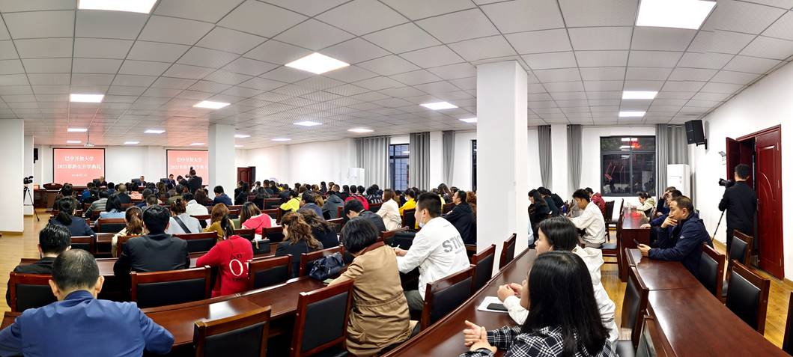

图1：巴中电大开学典礼
为营造浓厚的开学氛围，激发新生学习热情，明确学习和考试要求，4月13日晚上7点，巴中广播电视大学隆重举行2021春季学期新生开学典礼。巴中电大直属部全体教职工及新生代表共计200余人参加。
开学典礼在庄严的国歌声中拉开帷幕。巴中电大校长李建平致辞讲话。他向新生分享了巴中电大即将更名转型为为巴中开放大学的消息，详细介绍了巴中电大的前世今生和转型后开放大学面临的巨大机遇，并对2021春学期全体新生提出了三点希望。一是学史崇德，在新时代新实践中“胸怀大我”。要求新同学要以学习党的历史为重点，学习党史、新中国史、改革开放史、社会主义发展史，做到知史爱党、知史爱国。二是勤奋好学，在新时代新实践中“锤炼自我”。希望大家快速转变角色，端正学习态度，掌握学习方法，妥善处理工学矛盾，两年半以后以优异的成绩完成学业。三是担当作为，在新时代新实践中“建功有我”。期盼同学们将开放大学学到的知识结合工作实际，创新工作思路，破解工作难题，在平凡的工作中做出不平凡的业绩。

图2：开学典礼上开展了思政教育课
结合当前党史学习教育重点，王富副校长以《中国共产党的百年辉煌》为主题给新生上了一堂深刻的思政教育课。王富结合重大历史事件，把中国共产党百年历史划分为四个历史时期进行讲解。平实生动的语言，深入浅出地讲解让同学们感悟红色精神，汲取前行力量。
开学典礼上，2021春汉语言文学专业杨欢同学代表新生作《携手电大，向美好未来出发》主题发言。
招生办杨其运主任还为学员详细讲解了学习方法和考试要求。（巴中电大张春初 报道）

欢迎关注电大小微